Change analysis for Zambia for PRIMAP-hist v2.8_final compared to
v2.7_final
This changelog is published under the creative commons non-commercial
share alike license. For more information see creativecommons.org.
Overview over
emissions by sector and gas
The following figures show the aggregate national total emissions
excluding LULUCF AR6GWP100 for the country reported priority scenario.
The dotted lines show the v2.7_final data.
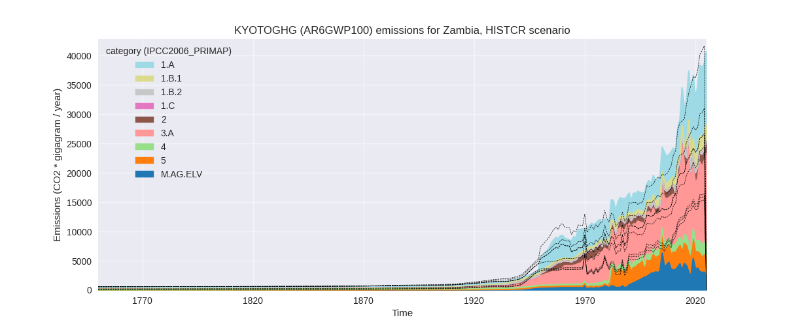
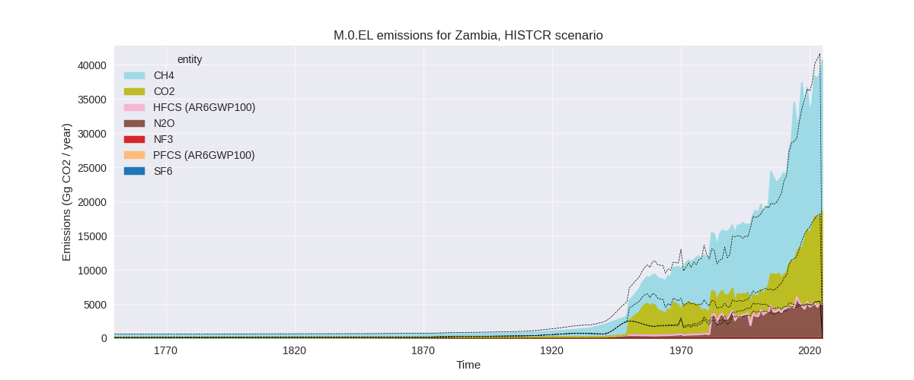
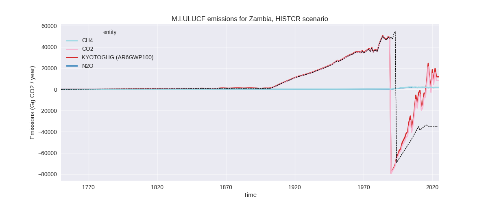
The following figures show the aggregate national total emissions
excluding LULUCF AR6GWP100 for the third party priority scenario. The
dotted lines show the v2.7_final data.
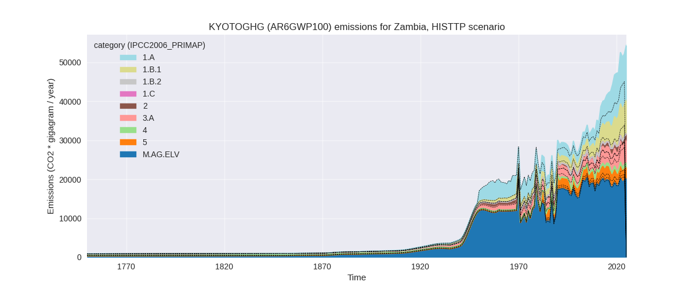
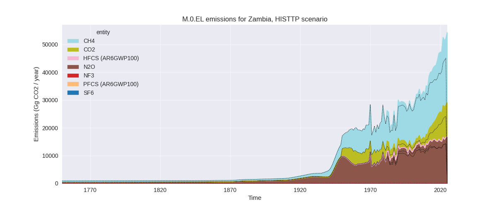
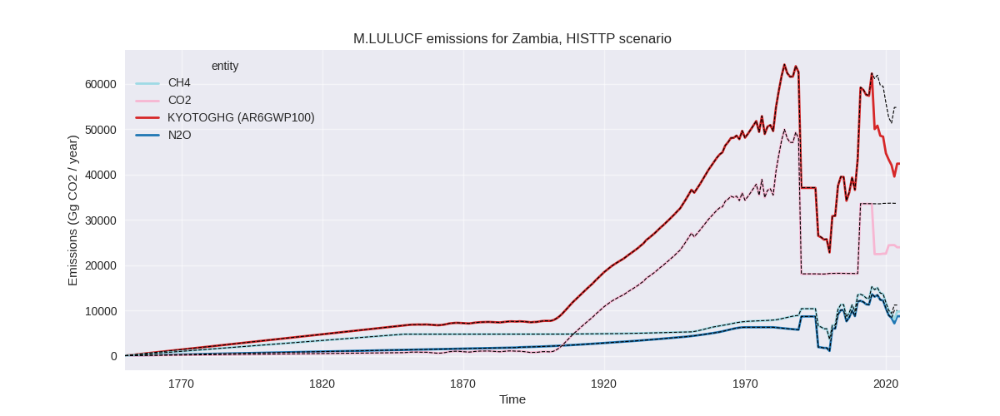
Used country reported data
The changelog with this information is available upon request for
non-commercial customers. Paying commercial customers will be provided
with the information.
Overview over changes
In the country reported priority scenario we have the following
changes for aggregate Kyoto GHG and national total emissions excluding
LULUCF (M.0.EL):
- Emissions in 2024 have changed by -7.3%% (-3023.46 Gg CO2 / year)
- Emissions in 1990-2024 have changed by 3.2%% (766.77 Gg CO2 / year)
In the third party priority scenario we have the following changes
for aggregate Kyoto GHG and national total emissions excluding LULUCF
(M.0.EL):
- Emissions in 2024 have changed by 15.6%% (7041.36 Gg CO2 / year)
- Emissions in 1990-2024 have changed by 9.4%% (3090.16 Gg CO2 / year)
Most
important changes per scenario and time frame
In the country reported priority scenario the
following sector-gas combinations have the highest absolute impact on
national total KyotoGHG (AR6GWP100) emissions in 2024
(up to 10 with either at least 0.2% impact on total emissions or at
least 20% change):
- 1: M.AG.ELV, CH4 with -9534.09 Gg CO2 / year (-87.2%, -22.9%)
- 2: 3.A, CH4 with 5867.58 Gg CO2 / year (74.3%, 14.1%)
- 3: M.AG.ELV, N2O with -2641.54 Gg CO2 / year (-63.3%, -6.3%)
- 4: 5, N2O with 2323.35 Gg CO2 / year (381.6%, 5.6%)
- 5: 4, CH4 with 1974.83 Gg CO2 / year (784.2%, 4.7%)
- 6: 1.B.1, CH4 with -1730.89 Gg CO2 / year (-40.7%, -4.2%)
- 7: 1.A, CH4 with 807.55 Gg CO2 / year (532.5%, 1.9%)
- 8: 1.A, CO2 with 302.47 Gg CO2 / year (2.9%, 0.7%)
- 9: 2, CO2 with -222.19 Gg CO2 / year (-10.2%, -0.5%)
- 10: 4, N2O with -179.67 Gg CO2 / year (-99.6%, -0.4%)
In the country reported priority scenario the
following sector-gas combinations have the highest absolute impact on
national total KyotoGHG (AR6GWP100) emissions in
1990-2024 (up to 10 with either at least 0.1% impact on
total emissions or at least 10% change):
- 1: 3.A, CH4 with 4219.61 Gg CO2 / year (90.0%, 17.5%)
- 2: M.AG.ELV, CH4 with -3851.53 Gg CO2 / year (-65.2%, -16.0%)
- 3: 5, N2O with 2235.78 Gg CO2 / year (395.6%, 9.3%)
- 4: M.AG.ELV, N2O with -2202.07 Gg CO2 / year (-71.5%, -9.1%)
- 5: 1.B.1, CH4 with -1430.00 Gg CO2 / year (-51.1%, -5.9%)
- 6: 4, CH4 with 1043.08 Gg CO2 / year (376.3%, 4.3%)
- 7: 2, HFCS (AR6GWP100) with -574.05 Gg CO2 / year (-94.4%, -2.4%)
- 8: 1.A, CH4 with 542.36 Gg CO2 / year (76.6%, 2.3%)
- 9: 2, CO2 with 378.10 Gg CO2 / year (37.1%, 1.6%)
- 10: 1.A, CO2 with 348.74 Gg CO2 / year (8.9%, 1.4%)
In the third party priority scenario the following
sector-gas combinations have the highest absolute impact on national
total KyotoGHG (AR6GWP100) emissions in 2024 (up to 10
with either at least 0.2% impact on total emissions or at least 20%
change):
- 1: 1.B.1, CH4 with 3715.69 Gg CO2 / year (87.5%, 8.2%)
- 2: 5, N2O with 2323.35 Gg CO2 / year (381.6%, 5.2%)
- 3: 1.A, CO2 with 1325.01 Gg CO2 / year (15.5%, 2.9%)
- 4: M.AG.ELV, CH4 with -630.89 Gg CO2 / year (-7.7%, -1.4%)
- 5: M.AG.ELV, N2O with -364.05 Gg CO2 / year (-3.0%, -0.8%)
- 6: 1.A, N2O with 347.97 Gg CO2 / year (59.5%, 0.8%)
- 7: 3.A, CH4 with -342.72 Gg CO2 / year (-6.1%, -0.8%)
- 8: 1.A, CH4 with 262.40 Gg CO2 / year (13.0%, 0.6%)
- 9: 2, CO2 with 198.61 Gg CO2 / year (19.2%, 0.4%)
- 10: 2, HFCS (AR6GWP100) with 88.83 Gg CO2 / year (inf%, 0.2%)
In the third party priority scenario the following
sector-gas combinations have the highest absolute impact on national
total KyotoGHG (AR6GWP100) emissions in 1990-2024 (up
to 10 with either at least 0.1% impact on total emissions or at least
10% change):
- 1: 5, N2O with 2235.78 Gg CO2 / year (395.6%, 6.8%)
- 2: 1.B.1, CH4 with 1019.65 Gg CO2 / year (36.4%, 3.1%)
- 3: 2, HFCS (AR6GWP100) with -574.05 Gg CO2 / year (-94.4%, -1.8%)
- 4: 1.A, CO2 with 363.12 Gg CO2 / year (10.0%, 1.1%)
- 5: 1.A, CH4 with 70.63 Gg CO2 / year (5.0%, 0.2%)
- 6: M.AG.ELV, CH4 with -45.68 Gg CO2 / year (-0.6%, -0.1%)
- 7: M.AG.ELV, N2O with -38.83 Gg CO2 / year (-0.4%, -0.1%)
- 8: 1.A, N2O with 32.57 Gg CO2 / year (11.0%, 0.1%)
- 9: M.AG.ELV, CO2 with 15.32 Gg CO2 / year (16.6%, 0.0%)
Notes on data changes
The changelog with this information is available upon request for
non-commercial customers. Paying commercial customers will be provided
with the information.
Changes by sector and gas
For each scenario and time frame the changes are displayed for all
individual sectors and all individual gases. In the sector plot we use
aggregate Kyoto GHGs in AR6GWP100. In the gas plot we usenational total
emissions without LULUCF.
country reported scenario
2024
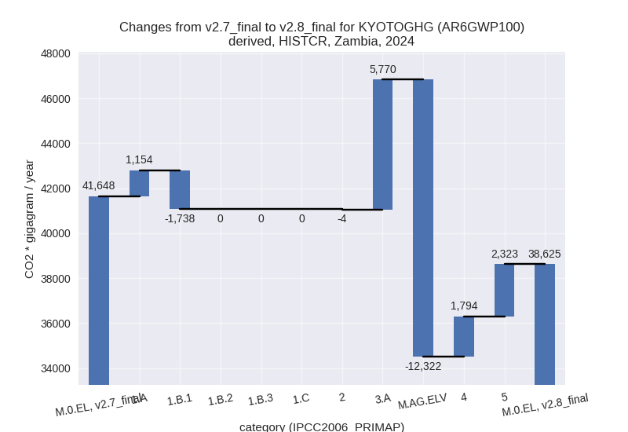
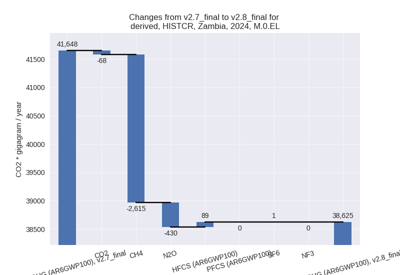
1990-2024
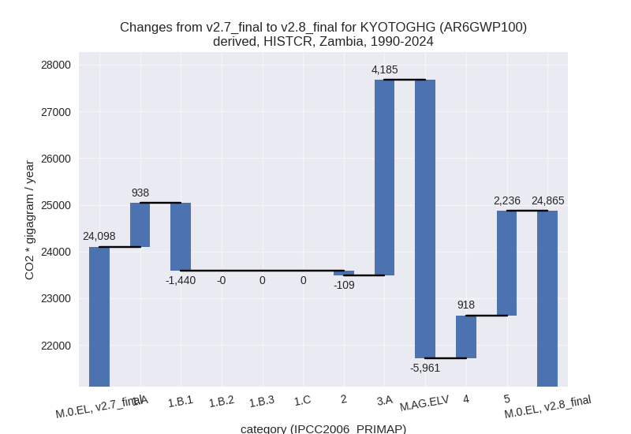
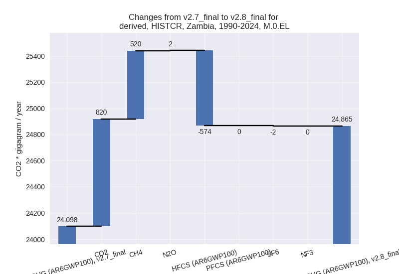
third party scenario
2024
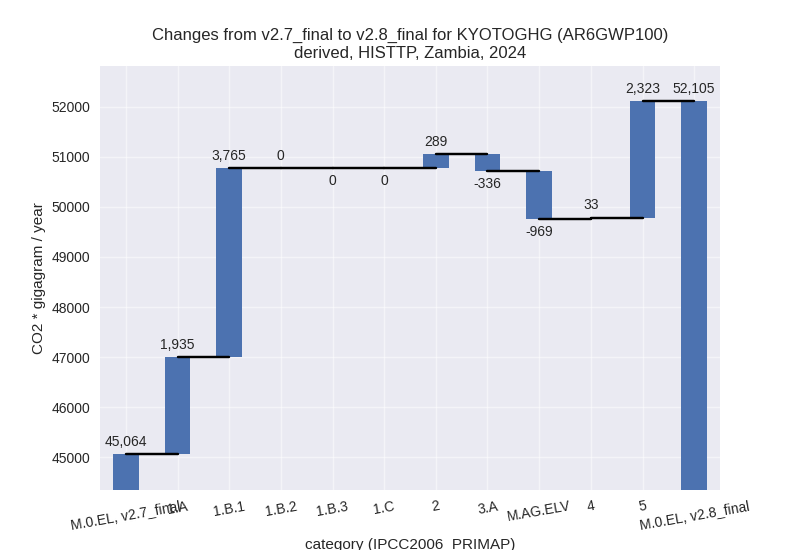
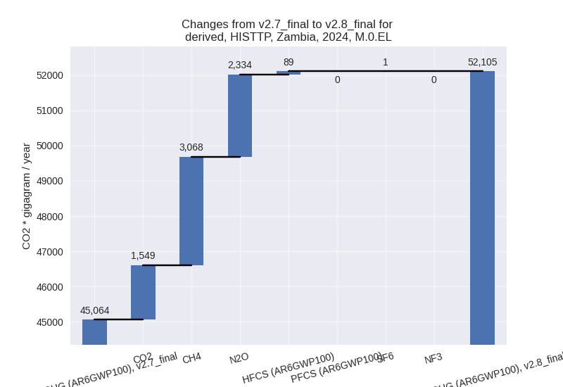
1990-2024
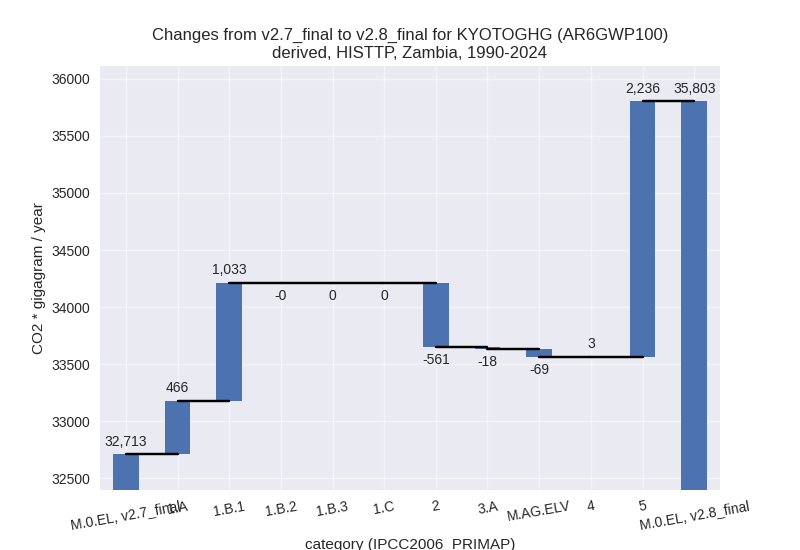
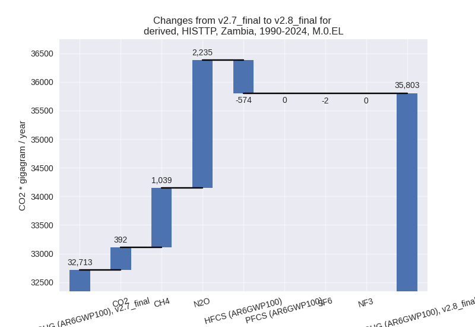
Detailed changes for the
scenarios:
country reported scenario
(HISTCR):
Most important changes
per time frame
For 2024 the following sector-gas combinations have
the highest absolute impact on national total KyotoGHG (AR6GWP100)
emissions in 2024 (up to 20 with either at least 0.2%
impact on total emissions or at least 20% change):
- 1: M.AG.ELV, CH4 with -9534.09 Gg CO2 / year (-87.2%), -22.9%)
- 2: 3.A, CH4 with 5867.58 Gg CO2 / year (74.3%), 14.1%)
- 3: M.AG.ELV, N2O with -2641.54 Gg CO2 / year (-63.3%), -6.3%)
- 4: 5, N2O with 2323.35 Gg CO2 / year (381.6%), 5.6%)
- 5: 4, CH4 with 1974.83 Gg CO2 / year (784.2%), 4.7%)
- 6: 1.B.1, CH4 with -1730.89 Gg CO2 / year (-40.7%), -4.2%)
- 7: 1.A, CH4 with 807.55 Gg CO2 / year (532.5%), 1.9%)
- 8: 1.A, CO2 with 302.47 Gg CO2 / year (2.9%), 0.7%)
- 9: 2, CO2 with -222.19 Gg CO2 / year (-10.2%), -0.5%)
- 10: 4, N2O with -179.67 Gg CO2 / year (-99.6%), -0.4%)
- 11: M.AG.ELV, CO2 with -146.64 Gg CO2 / year (-52.3%), -0.4%)
- 12: 2, N2O with 128.28 Gg CO2 / year (3200.5%), 0.3%)
- 13: 3.A, N2O with -97.21 Gg CO2 / year (-59.4%), -0.2%)
- 14: 2, HFCS (AR6GWP100) with 88.83 Gg CO2 / year (inf%), 0.2%)
- 15: 1.A, N2O with 43.60 Gg CO2 / year (20.8%), 0.1%)
- 16: 4, CO2 with -1.24 Gg CO2 / year (-73.6%), -0.0%)
- 17: 2, SF6 with 0.98 Gg CO2 / year (inf%), 0.0%)
- 18: 1.B.1, CO2 with -0.47 Gg CO2 / year (-93.2%), -0.0%)
For 1990-2024 the following sector-gas combinations
have the highest absolute impact on national total KyotoGHG (AR6GWP100)
emissions in 1990-2024 (up to 20 with either at least
0.1% impact on total emissions or at least 10% change):
- 1: 3.A, CH4 with 4219.61 Gg CO2 / year (90.0%), 17.5%)
- 2: M.AG.ELV, CH4 with -3851.53 Gg CO2 / year (-65.2%), -16.0%)
- 3: 5, N2O with 2235.78 Gg CO2 / year (395.6%), 9.3%)
- 4: M.AG.ELV, N2O with -2202.07 Gg CO2 / year (-71.5%), -9.1%)
- 5: 1.B.1, CH4 with -1430.00 Gg CO2 / year (-51.1%), -5.9%)
- 6: 4, CH4 with 1043.08 Gg CO2 / year (376.3%), 4.3%)
- 7: 2, HFCS (AR6GWP100) with -574.05 Gg CO2 / year (-94.4%), -2.4%)
- 8: 1.A, CH4 with 542.36 Gg CO2 / year (76.6%), 2.3%)
- 9: 2, CO2 with 378.10 Gg CO2 / year (37.1%), 1.6%)
- 10: 1.A, CO2 with 348.74 Gg CO2 / year (8.9%), 1.4%)
- 11: 4, N2O with -123.37 Gg CO2 / year (-99.7%), -0.5%)
- 12: M.AG.ELV, CO2 with 92.97 Gg CO2 / year (92.8%), 0.4%)
- 13: 2, N2O with 88.90 Gg CO2 / year (3562.2%), 0.4%)
- 14: 1.A, N2O with 47.04 Gg CO2 / year (29.1%), 0.2%)
- 15: 3.A, N2O with -34.39 Gg CO2 / year (-33.6%), -0.1%)
- 16: 1.B.1, N2O with -10.08 Gg CO2 / year (-27.5%), -0.0%)
- 17: 1.B.2, CH4 with -3.05 Gg CO2 / year (-89.3%), -0.0%)
- 18: 1.B.2, CO2 with 2.57 Gg CO2 / year (638735.7%), 0.0%)
- 19: 2, SF6 with -1.83 Gg CO2 / year (-82.0%), -0.0%)
- 20: 4, CO2 with -1.81 Gg CO2 / year (-86.8%), -0.0%)
Changes in the main sectors for aggregate KyotoGHG (AR6GWP100)
are
- 1: Total sectoral emissions in 2022 are 14567.12 Gg
CO2 / year which is 38.0% of M.0.EL emissions. 2024 Emissions have
changed by -3.9% (-584.74 Gg CO2 /
year). 1990-2024 Emissions have changed by -6.6% (-502.62 Gg CO2 / year). For 2024
the changes per gas
are:
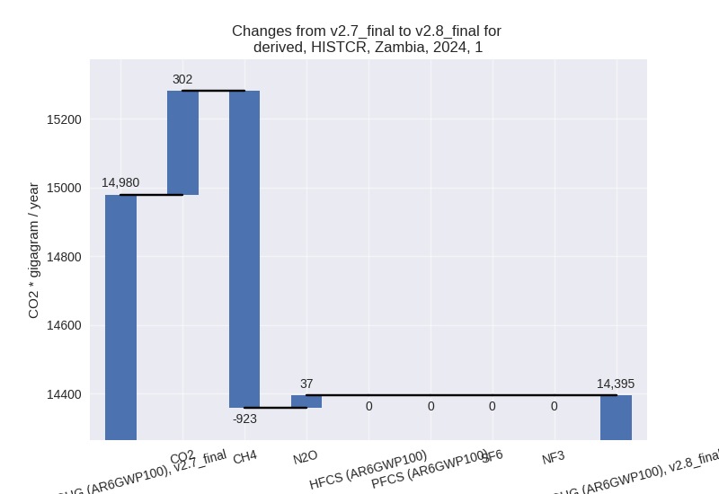
For 1990-2024 the changes per gas
are:
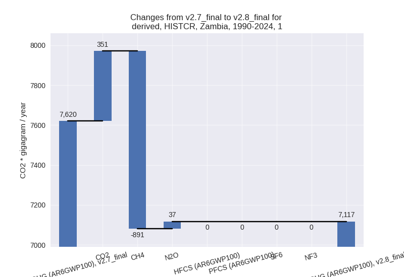
The changes come from the following subsectors:
- 1.A: Total sectoral emissions in 2022 are 12000.65
Gg CO2 / year which is 82.4% of category 1 emissions. 2024 Emissions
have changed by 10.8% (1153.61 Gg
CO2 / year). 1990-2024 Emissions have changed by 19.6% (938.15 Gg CO2 / year). For 2024 the
changes per gas
are:
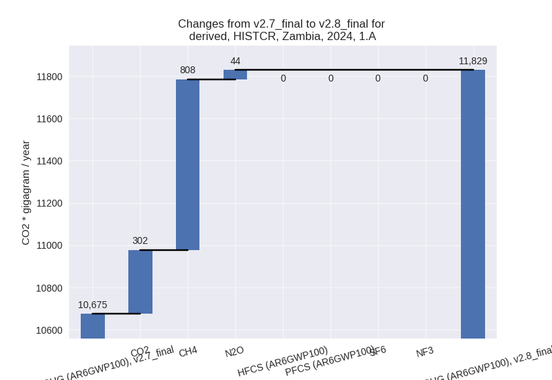
For 1990-2024 the changes per gas
are:
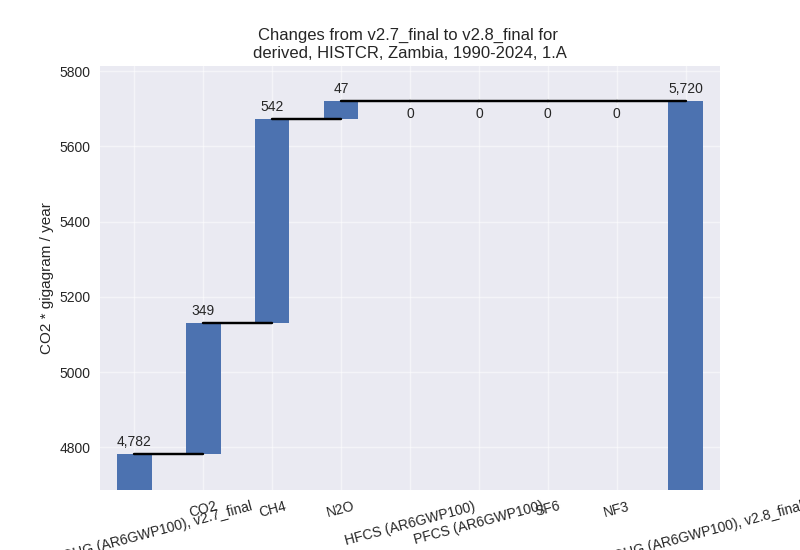
There is no subsector information available in PRIMAP-hist.
- 1.B.1: Total sectoral emissions in 2022 are 2566.48
Gg CO2 / year which is 17.6% of category 1 emissions. 2024 Emissions
have changed by -40.4% (-1738.35 Gg
CO2 / year). 1990-2024 Emissions have changed by -50.8% (-1440.30 Gg CO2 / year). For 2024
the changes per gas
are:
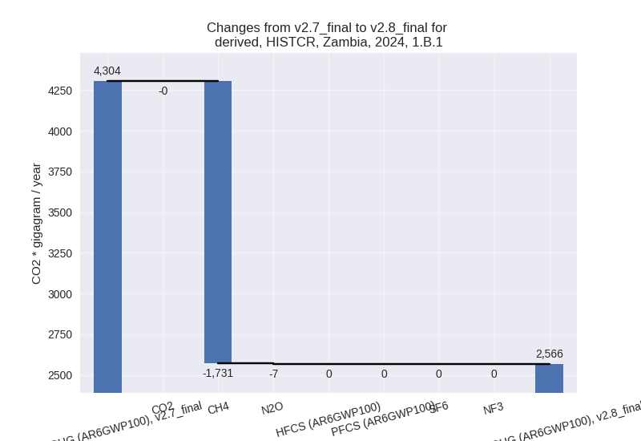
For 1990-2024 the changes per gas
are:
There is no subsector information available in PRIMAP-hist.
- 1.B.2: Total sectoral emissions in 2022 are 0.00 Gg
CO2 / year which is 0.0% of category 1 emissions. 2024 Emissions have
changed by 0.0% (0.00 Gg CO2 /
year). 1990-2024 Emissions have changed by -13.9% (-0.47 Gg CO2 / year). For
1990-2024 the changes per gas
are:
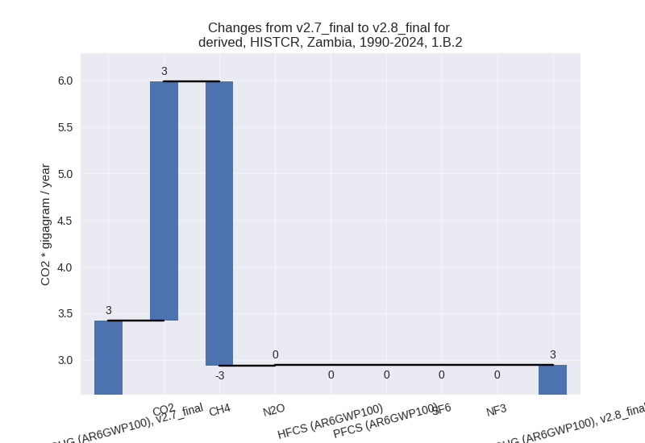
There is no subsector information available in PRIMAP-hist.
- 2: Total sectoral emissions in 2022 are 1883.96 Gg
CO2 / year which is 4.9% of M.0.EL emissions. 2024 Emissions have
changed by -0.2% (-4.11 Gg CO2 /
year). 1990-2024 Emissions have changed by -6.7% (-108.88 Gg CO2 / year). For
1990-2024 the changes per gas
are:
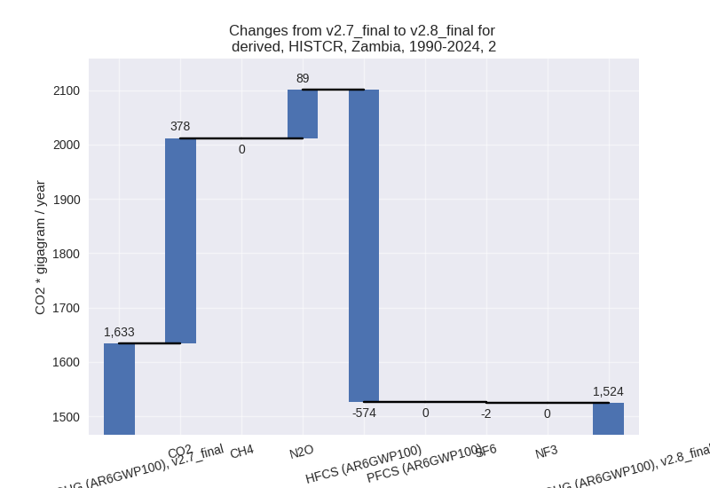
- M.AG: Total sectoral emissions in 2022 are 16687.47
Gg CO2 / year which is 43.5% of M.0.EL emissions. 2024 Emissions have
changed by -27.9% (-6551.91 Gg CO2 /
year). 1990-2024 Emissions have changed by -12.8% (-1775.41 Gg CO2 / year). For 2024
the changes per gas
are:
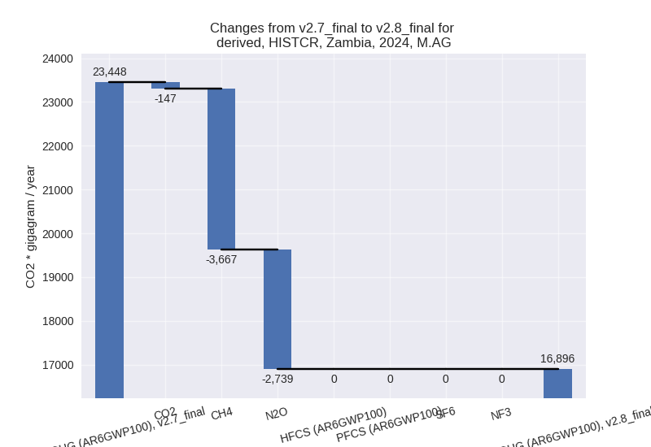
For 1990-2024 the changes per gas
are:
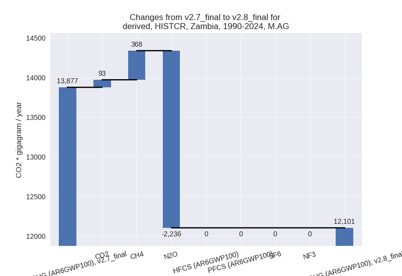
The changes come from the following subsectors:
- 3.A: Total sectoral emissions in 2022 are 13540.38
Gg CO2 / year which is 81.1% of category M.AG emissions. 2024 Emissions
have changed by 71.6% (5770.37 Gg
CO2 / year). 1990-2024 Emissions have changed by 87.4% (4185.21 Gg CO2 / year). For 2024
the changes per gas
are:
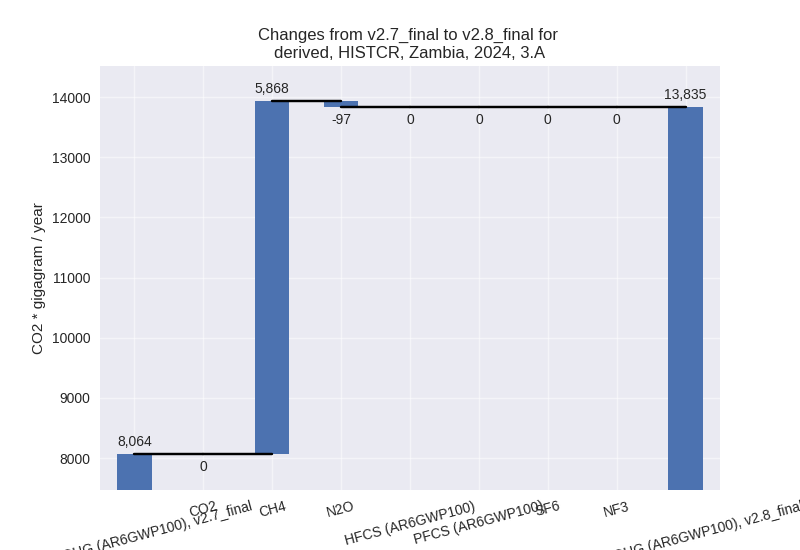
For 1990-2024 the changes per gas
are:
There is no subsector information available in PRIMAP-hist.
- M.AG.ELV: Total sectoral emissions in 2022 are
3147.09 Gg CO2 / year which is 18.9% of category M.AG emissions. 2024
Emissions have changed by -80.1%
(-12322.28 Gg CO2 / year). 1990-2024 Emissions have changed by -65.6% (-5960.63 Gg CO2 / year). For 2024
the changes per gas
are:
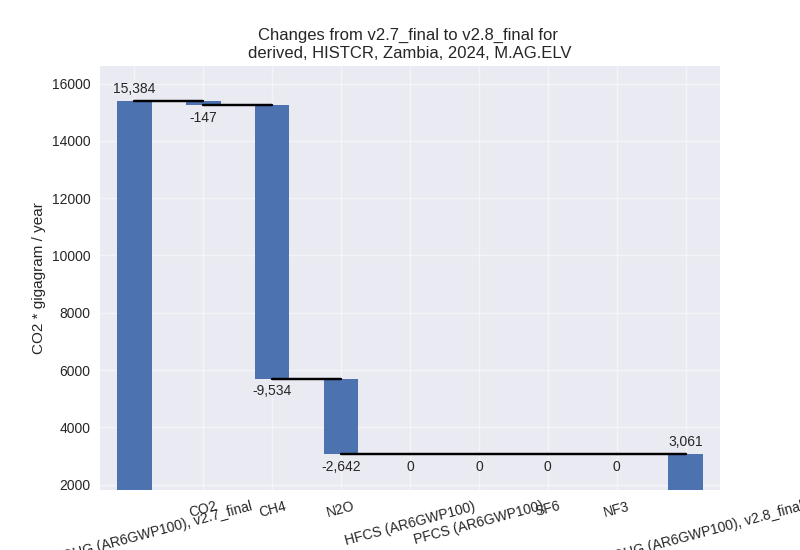
For 1990-2024 the changes per gas
are:
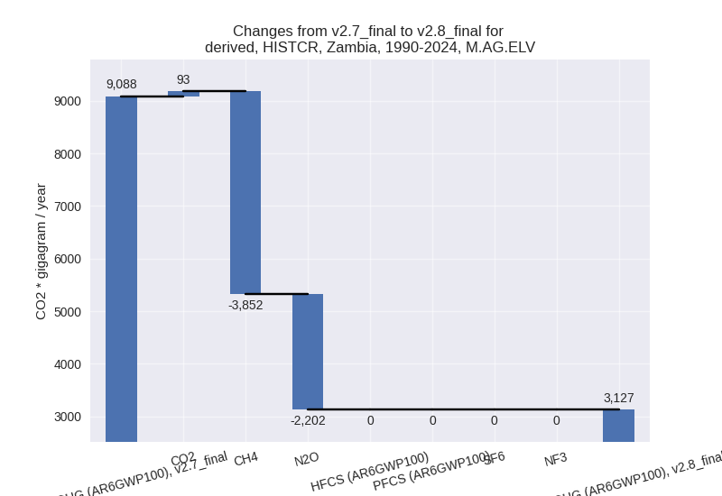
There is no subsector information available in PRIMAP-hist.
- 4: Total sectoral emissions in 2022 are 2087.47 Gg
CO2 / year which is 5.4% of M.0.EL emissions. 2024 Emissions have
changed by 413.5% (1793.93 Gg CO2 /
year). 1990-2024 Emissions have changed by 227.7% (917.90 Gg CO2 / year). For 2024
the changes per gas
are:
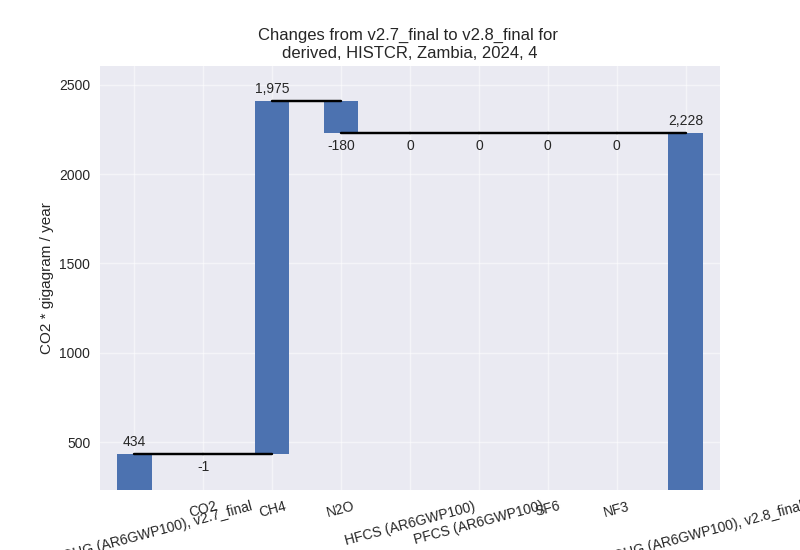
For 1990-2024 the changes per gas
are:
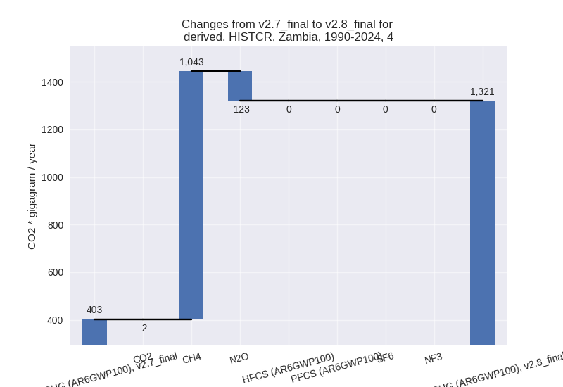
- 5: Total sectoral emissions in 2022 are 3092.94 Gg
CO2 / year which is 8.1% of M.0.EL emissions. 2024 Emissions have
changed by 381.6% (2323.35 Gg CO2 /
year). 1990-2024 Emissions have changed by 395.6% (2235.78 Gg CO2 / year). For 2024
the changes per gas
are:
For 1990-2024 the changes per gas
are:
third party scenario (HISTTP):
Most important changes
per time frame
For 2024 the following sector-gas combinations have
the highest absolute impact on national total KyotoGHG (AR6GWP100)
emissions in 2024 (up to 20 with either at least 0.2%
impact on total emissions or at least 20% change):
- 1: 1.B.1, CH4 with 3715.69 Gg CO2 / year (87.5%), 8.2%)
- 2: 5, N2O with 2323.35 Gg CO2 / year (381.6%), 5.2%)
- 3: 1.A, CO2 with 1325.01 Gg CO2 / year (15.5%), 2.9%)
- 4: M.AG.ELV, CH4 with -630.89 Gg CO2 / year (-7.7%), -1.4%)
- 5: M.AG.ELV, N2O with -364.05 Gg CO2 / year (-3.0%), -0.8%)
- 6: 1.A, N2O with 347.97 Gg CO2 / year (59.5%), 0.8%)
- 7: 3.A, CH4 with -342.72 Gg CO2 / year (-6.1%), -0.8%)
- 8: 1.A, CH4 with 262.40 Gg CO2 / year (13.0%), 0.6%)
- 9: 2, CO2 with 198.61 Gg CO2 / year (19.2%), 0.4%)
- 10: 2, HFCS (AR6GWP100) with 88.83 Gg CO2 / year (inf%), 0.2%)
- 11: 1.B.1, N2O with 48.79 Gg CO2 / year (87.6%), 0.1%)
- 12: 4, CO2 with -1.24 Gg CO2 / year (-73.6%), -0.0%)
- 13: 2, SF6 with 0.98 Gg CO2 / year (inf%), 0.0%)
- 14: 1.B.1, CO2 with 0.95 Gg CO2 / year (189.6%), 0.0%)
- 15: 1.B.2, CH4 with 0.01 Gg CO2 / year (inf%), 0.0%)
For 1990-2024 the following sector-gas combinations
have the highest absolute impact on national total KyotoGHG (AR6GWP100)
emissions in 1990-2024 (up to 20 with either at least
0.1% impact on total emissions or at least 10% change):
- 1: 5, N2O with 2235.78 Gg CO2 / year (395.6%), 6.8%)
- 2: 1.B.1, CH4 with 1019.65 Gg CO2 / year (36.4%), 3.1%)
- 3: 2, HFCS (AR6GWP100) with -574.05 Gg CO2 / year (-94.4%), -1.8%)
- 4: 1.A, CO2 with 363.12 Gg CO2 / year (10.0%), 1.1%)
- 5: 1.A, CH4 with 70.63 Gg CO2 / year (5.0%), 0.2%)
- 6: M.AG.ELV, CH4 with -45.68 Gg CO2 / year (-0.6%), -0.1%)
- 7: M.AG.ELV, N2O with -38.83 Gg CO2 / year (-0.4%), -0.1%)
- 8: 1.A, N2O with 32.57 Gg CO2 / year (11.0%), 0.1%)
- 9: M.AG.ELV, CO2 with 15.32 Gg CO2 / year (16.6%), 0.0%)
- 10: 1.B.1, N2O with 13.45 Gg CO2 / year (36.7%), 0.0%)
- 11: 2, SF6 with -1.83 Gg CO2 / year (-82.0%), -0.0%)
- 12: 4, CO2 with -1.81 Gg CO2 / year (-86.8%), -0.0%)
- 13: 1.B.1, CO2 with 0.13 Gg CO2 / year (57.3%), 0.0%)
- 14: 1.B.2, N2O with 0.01 Gg CO2 / year (inf%), 0.0%)
Changes in the main sectors for aggregate KyotoGHG (AR6GWP100)
are
- 1: Total sectoral emissions in 2022 are 21251.56 Gg
CO2 / year which is 40.5% of M.0.EL emissions. 2024 Emissions have
changed by 36.9% (5700.82 Gg CO2 /
year). 1990-2024 Emissions have changed by 18.4% (1499.55 Gg CO2 / year). For 2024
the changes per gas
are:
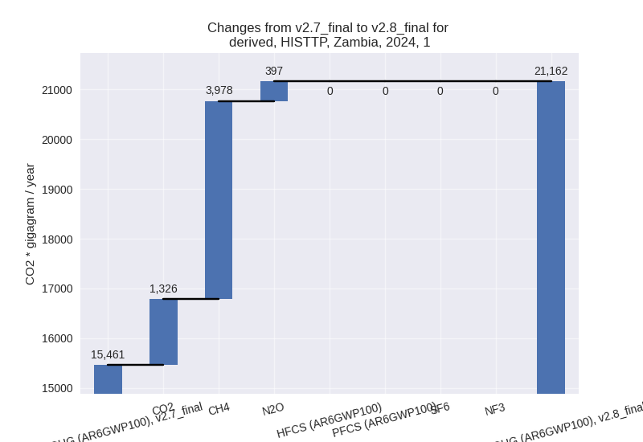
For 1990-2024 the changes per gas
are:
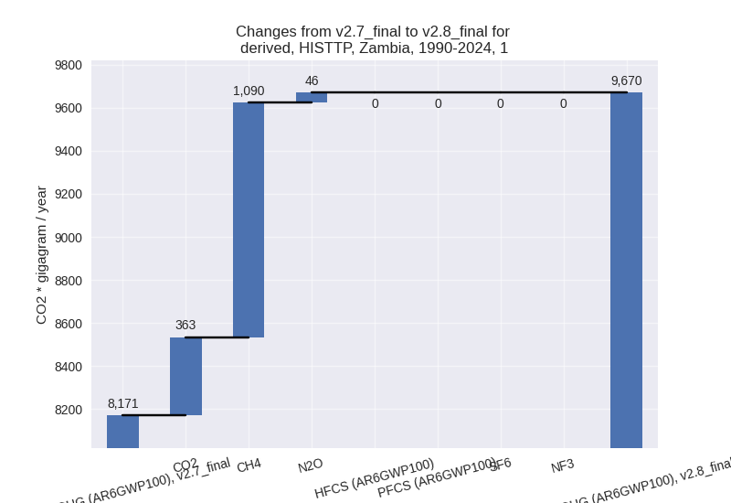
The changes come from the following subsectors:
- 1.A: Total sectoral emissions in 2022 are 13180.22
Gg CO2 / year which is 62.0% of category 1 emissions. 2024 Emissions
have changed by 17.3% (1935.39 Gg
CO2 / year). 1990-2024 Emissions have changed by 8.7% (466.33 Gg CO2 / year). For 2024 the
changes per gas
are:
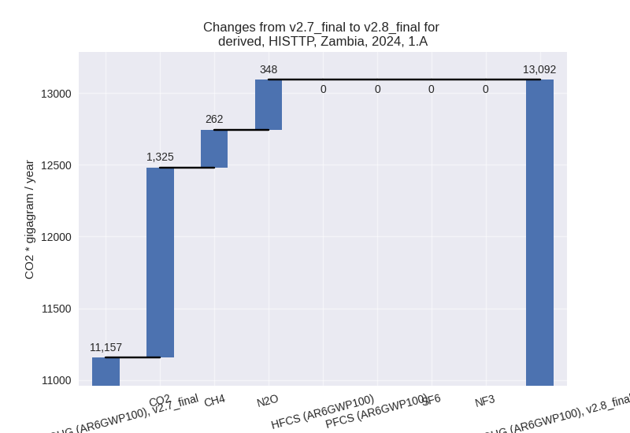
For 1990-2024 the changes per gas
are:
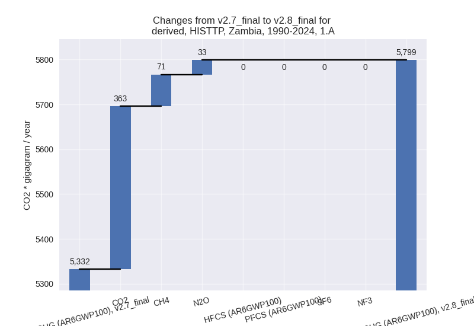
There is no subsector information available in PRIMAP-hist.
- 1.B.1: Total sectoral emissions in 2022 are 8071.33
Gg CO2 / year which is 38.0% of category 1 emissions. 2024 Emissions
have changed by 87.5% (3765.42 Gg
CO2 / year). 1990-2024 Emissions have changed by 36.4% (1033.24 Gg CO2 / year). For 2024
the changes per gas
are:
For 1990-2024 the changes per gas
are:
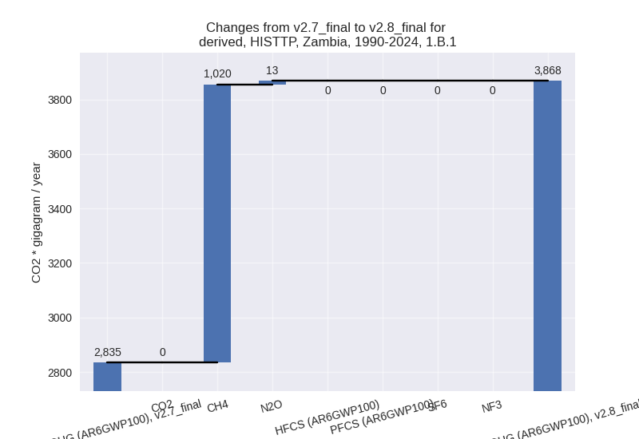
There is no subsector information available in PRIMAP-hist.
- 1.B.2: Total sectoral emissions in 2022 are 0.01 Gg
CO2 / year which is 0.0% of category 1 emissions. 2024 Emissions have
changed by inf% (0.01 Gg CO2 /
year). 1990-2024 Emissions have changed by -0.4% (-0.01 Gg CO2 / year). For 2024 the
changes per gas
are:
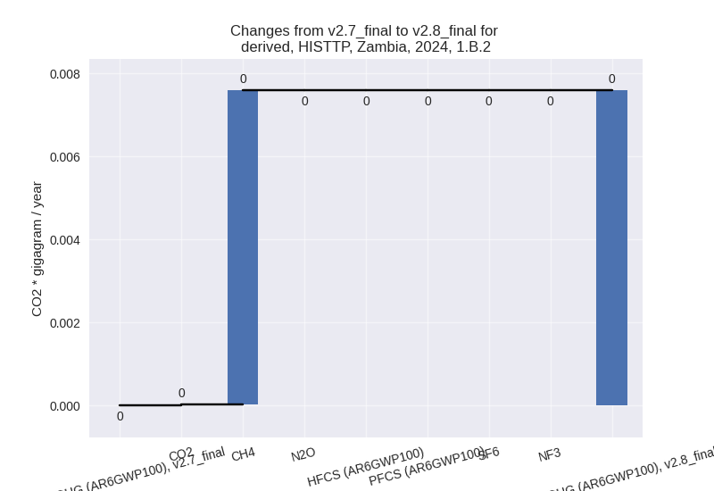
There is no subsector information available in PRIMAP-hist.
- 2: Total sectoral emissions in 2022 are 1545.14 Gg
CO2 / year which is 2.9% of M.0.EL emissions. 2024 Emissions have
changed by 20.2% (288.68 Gg CO2 /
year). 1990-2024 Emissions have changed by -36.8% (-560.65 Gg CO2 / year). For 2024
the changes per gas
are:
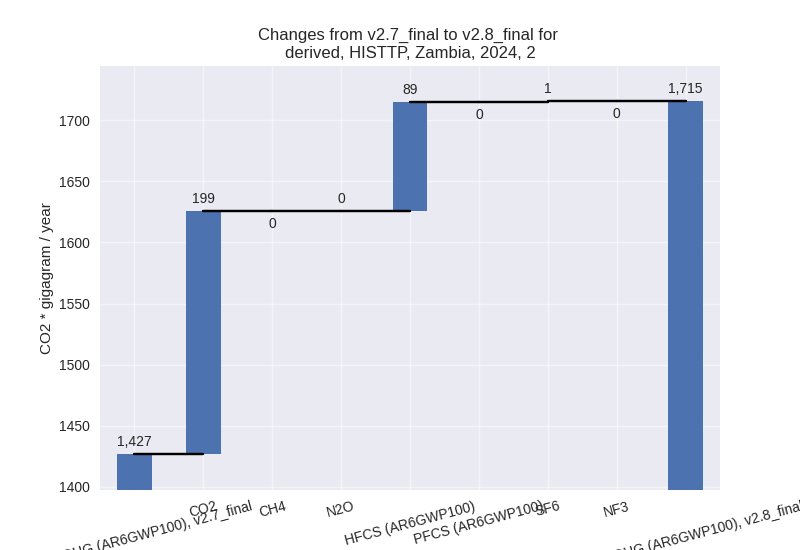
For 1990-2024 the changes per gas
are:
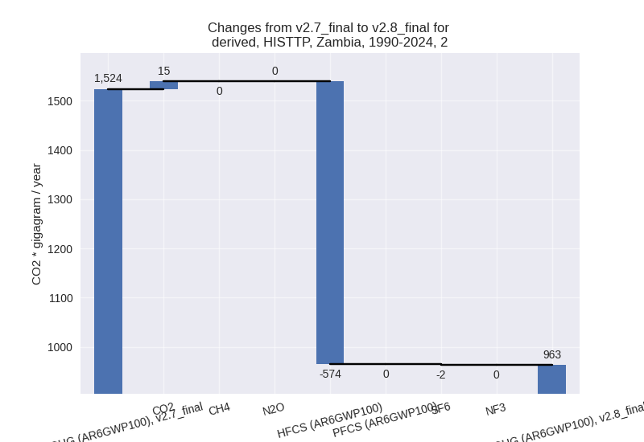
- M.AG: Total sectoral emissions in 2022 are 25455.61
Gg CO2 / year which is 48.5% of M.0.EL emissions. 2024 Emissions have
changed by -4.9% (-1304.94 Gg CO2 /
year). 1990-2024 Emissions have changed by -0.4% (-87.03 Gg CO2 / year). For 2024 the
changes per gas
are:
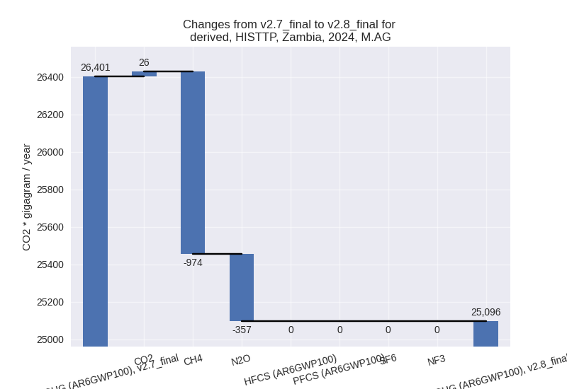
The changes come from the following subsectors:
- 3.A: Total sectoral emissions in 2022 are 5294.82
Gg CO2 / year which is 20.8% of category M.AG emissions. 2024 Emissions
have changed by -5.8% (-336.06 Gg
CO2 / year). 1990-2024 Emissions have changed by -0.5% (-17.84 Gg CO2 / year). For 2024 the
changes per gas
are:
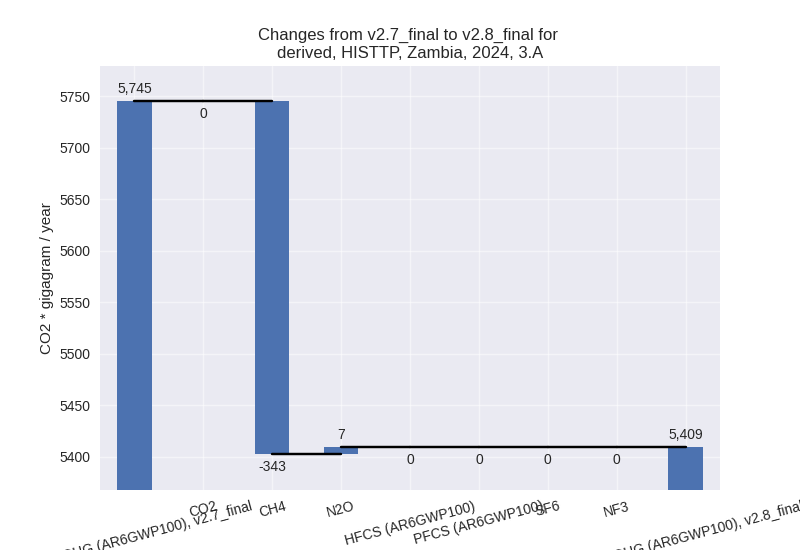
There is no subsector information available in PRIMAP-hist.
- M.AG.ELV: Total sectoral emissions in 2022 are
20160.79 Gg CO2 / year which is 79.2% of category M.AG emissions. 2024
Emissions have changed by -4.7%
(-968.88 Gg CO2 / year). 1990-2024 Emissions have changed by -0.4% (-69.20 Gg CO2 / year). For 2024 the
changes per gas
are:
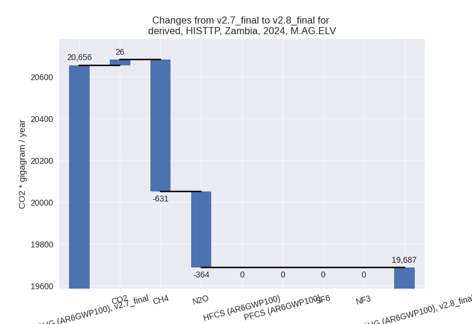
There is no subsector information available in PRIMAP-hist.
- 4: Total sectoral emissions in 2022 are 1132.46 Gg
CO2 / year which is 2.2% of M.0.EL emissions. 2024 Emissions have
changed by 2.9% (33.44 Gg CO2 /
year). 1990-2024 Emissions have changed by 0.4% (2.51 Gg CO2 / year). For 2024 the
changes per gas
are:
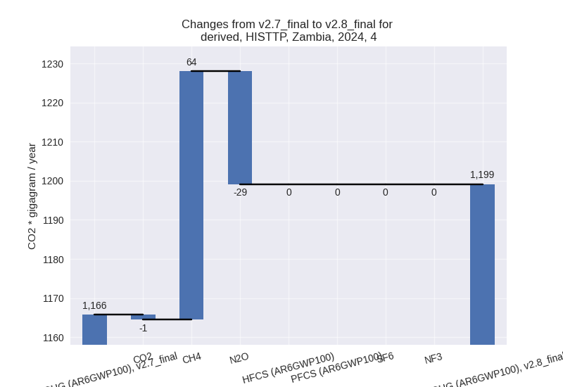
- 5: Total sectoral emissions in 2022 are 3092.94 Gg
CO2 / year which is 5.9% of M.0.EL emissions. 2024 Emissions have
changed by 381.6% (2323.35 Gg CO2 /
year). 1990-2024 Emissions have changed by 395.6% (2235.78 Gg CO2 / year). For 2024
the changes per gas
are:
For 1990-2024 the changes per gas
are:
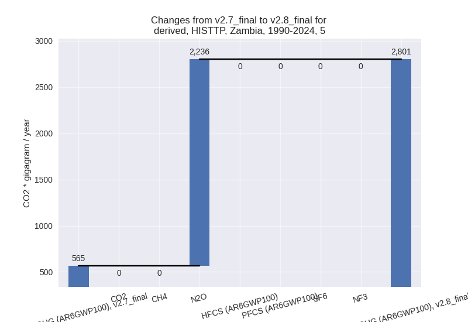